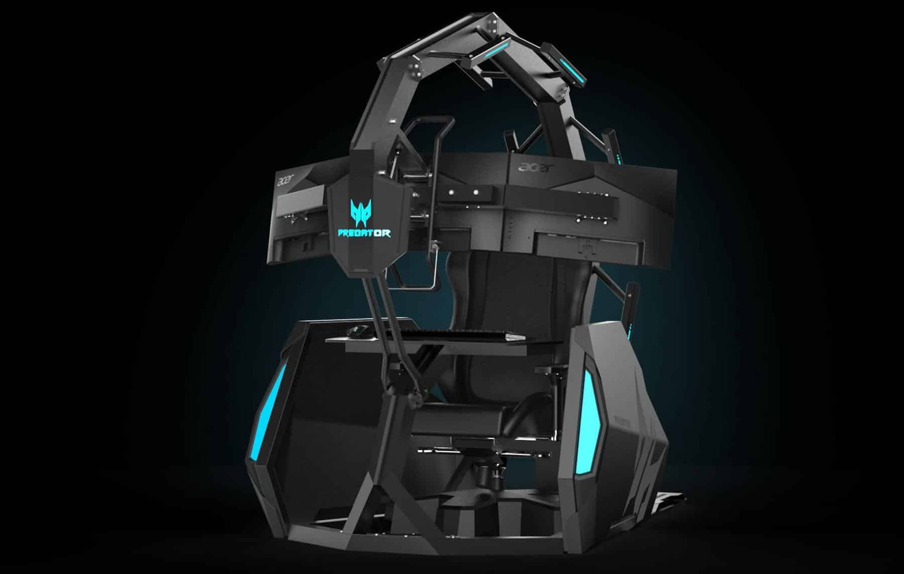
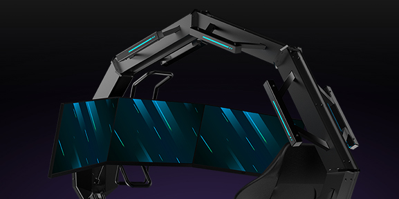
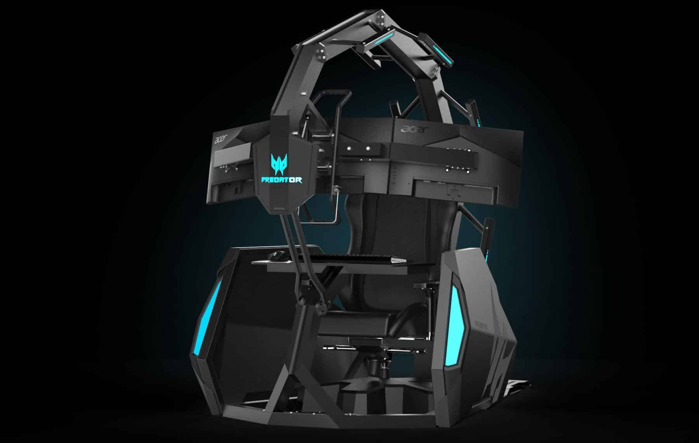
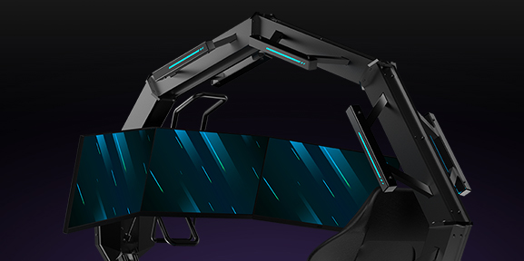

Acer Predator Throno Air
Ficha Técnica
- Três monitores Predator curvos.
- Reclinável em até 140°.
- Cadeira acolchoada e apoio para os pés motorizado.
- Iluminação RGB ao longo da Cadeira.
- O RGB pode ser ajustado através do controle remoto.
- Dezesseis cores e quatro modos para escolher.
- Som do jogo transmitidos através de vibrações, na cadeira, controladas pelos graves.
- Monitor Predator Z271U WQHD - 144 Hz.
- Processadores Intel® e Placas Gráficas NVIDIA®
- Mouse Predator Cestus 510 - 16.000 DPI e 400 IPS.
- Teclado Mecânico Predator Aethon 500 - RGB de 16,8 milhões de cores.
- HeadPhone Predator Galea 300.
- Mousepad Predator personalizado abrange o comprimento da bandeja de Teclado Mecanizada
- O Thronos se define com metal frio e preto, moldado em um exterior endurecido
- R$ 150.756,50
- R$ 67.750,80
- ou 24x de R$ 2.865,29 sem juros